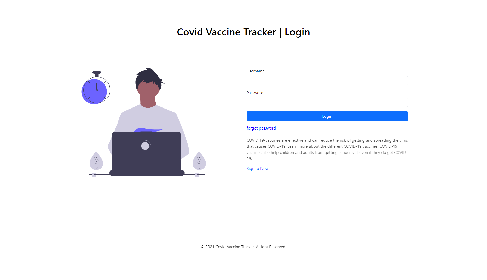

My Projects
I made all my project using html, css, javascript and python flask.
Covid Vaccine Tracker
Covid Vaccine Tracker System is a software design to track the amount of people in the specific place if they are vaccinated or unvaccinated. The purpose of this system is to help the healthcare workers to easily track the unvaccinated people in the specific place.